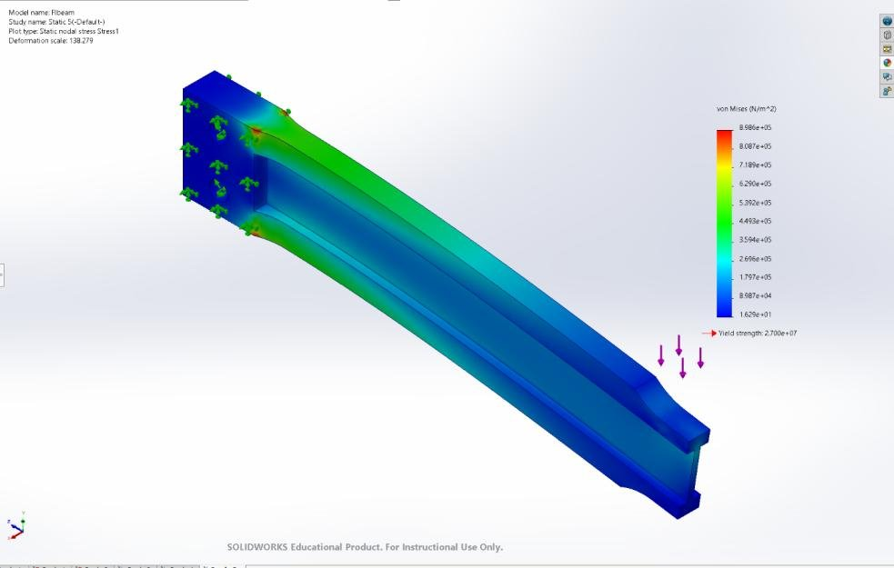
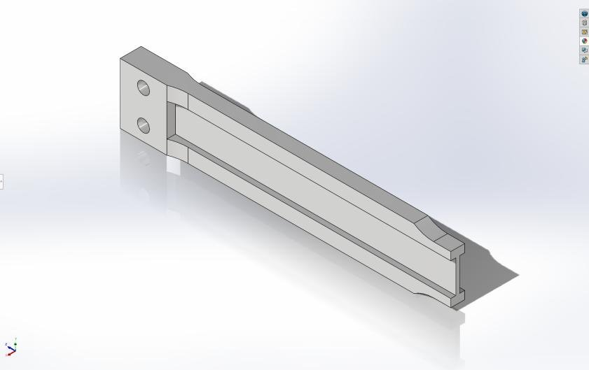
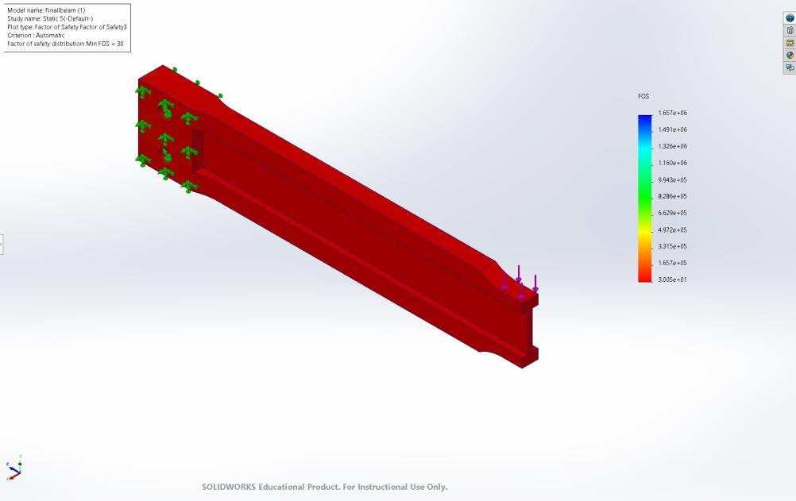
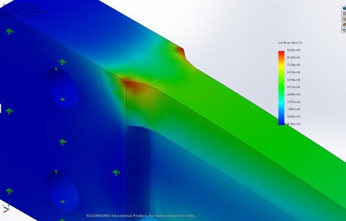
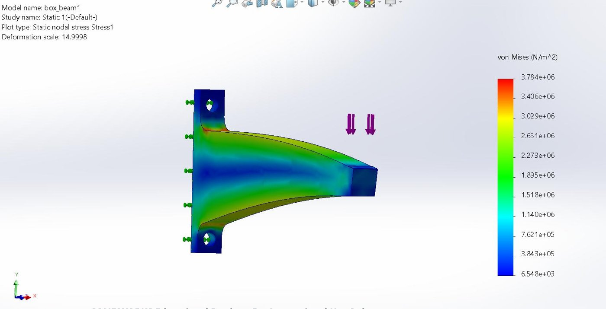

Project 02 · Cantilever Design Project
An ABS I-beam cantilever designed to carry as much load as possible from 2.00 in³ of material, with SolidWorks FEA driving every design change rather than just checking the last one.

Key results
45 lb
load supported by the printed beam
30 lb
failure load predicted by FEA (factor of safety 30 at a 1 lb load)
1.91 in³
final volume, under the 2.00 in³ limit
4→1
concepts modeled and simulated before choosing the I-beam
Design, model and analyze a 3D-printed cantilever that supports the maximum possible weight.
We studied reference structures (bridges, balconies, cranes), then modeled four concepts to the 6 in requirement and ran each through FEA: a standard I-beam, a tapered hollow box beam, an arched truss and a truss beam. The I-beam had the lowest maximum stress and the least deformation; the arched truss, for example, displaced 8.542 mm at the load point.
From the factor-of-safety plot the team predicted failure at 30 lb, at the intersection of the top flange and the mounting plate. The FEA was expected to overestimate strength because it treats the print as isotropic. In testing, the printed beam supported 45 lb; I compared the physical results with the FEA predictions and documented the factors affecting real-world performance.
Figures



